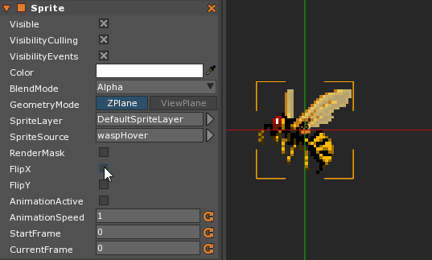
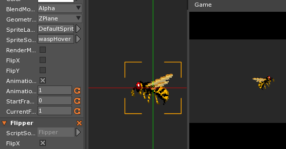
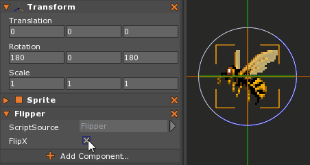

The WYSIWYG Approach to Configurable Properties
Properties are one of the easiest ways to make components more reusable. While some properties affect runtime behavior, others are simply items that help set the initial state of one’s components.
One can see the WYSIWYG (what-you-see-is-what-you-get) effect with some of the built-in components.
Here the Sprite’s orientation is changed the moment the FlipX box is checked in the editor.

As a demonstration, the following custom ZilchScript will emulate the FlipX while using a Property:
class Flipper : ZilchComponent
{
[Dependency] // Need the Transform component to perform the flip
var Transform:Transform = null;
[Property] // Property that allows objects to change direction from the editor
var FlipX:Boolean = false;
function Initialize(init : CogInitializer)
{
// If they chose to Flip, do so now
if (this.FlipX) this.Flip();
}
function Flip()
{
var trans = this.Transform;
var rot = trans.Rotation;
// Find the up vector for our object after our rotation is applied
var up = Math.Transform(Real3.YAxis, rot);
// Update rotation to include the 180 degree rotation around
// calculated local up, thus flipping the local x like Sprite does.
trans.Rotation = Math.Transform(rot,Math.AxisAngle(up, Math.Pi));
}
}

While this works, it doesn’t flip when the FlipX property is altered at runtime. By only
calling Flip() during initialization, it runs once and then never again. Although other scripts can
access and call Flip() themselves, this function doesn’t update the FlipX property,
which means it doesn’t represent the state of the object, like it does in the Sprite component.
This result can be tested with a simple Input component:
class Input : ZilchComponent
{
[Dependency]
var Flipper:Flipper = null;
[Dependency]
var Sprite:Sprite = null;
function Initialize(init : CogInitializer)
{
Zero.Connect(Zero.Keyboard, Events.KeyDown, this.OnKeyDown);
}
function OnKeyDown(event : KeyboardEvent)
{
if (event.Key == Keys.Right)
{
this.Flipper.FlipX = true;
}
else if (event.Key == Keys.Left)
{
this.Flipper.FlipX = false;
}
if (event.Key == Keys.D)
{
this.Sprite.FlipX = true;
}
else if (event.Key == Keys.A)
{
this.Sprite.FlipX = false;
}
}
}
When this component is attached to the Sprite object, one will notice quickly that while the sprite flips with A and D, it doesn’t with the
arrow keys.
To link the call of flip with the setting of the variable, we’ll use a Get-Set for editing and a field for the backing variable. i.e.
Replace:
[Property] // Property that allows objects to change direction from the editor
var FlipX:Boolean = false;
with:
[Serialized] // This is the backing field that saves the value.
var FlipXs:Boolean = false;
[Editable] // This is displayed in the Properties Window, but doesn't save
var FlipX:Boolean
{
get{return this.FlipXs;}
set{
// Using a get-set allows us to add functionality when the value is set;
// in this case, performing the flip when the value is changed.
if (this.FlipXs != value)
{
this.Flip();
this.FlipXs = value;
}
}
}
function Initialize(init : CogInitializer)
{
}
Now, the arrow keys are just as effective in updating the orientation of our Sprite, and FlipX
accurately reflects the current status of the object. Notice there is no longer a need to call Flip()
in the Initialize function, either.
To truly make it WYSIWYG the flip needs to happen in the editor when setting the FlipX value
to true. This can be done by marking the class with the [RunInEditor] attribute.
[RunInEditor]
class Flipper : ZilchComponent
{ //...
}

Employing [RunInEditor], [Serialized], and [Editable] we’ve created the WYSIWYG feel. This design pattern can be reused to create the polished WYSIWYG feel with one’s own components.